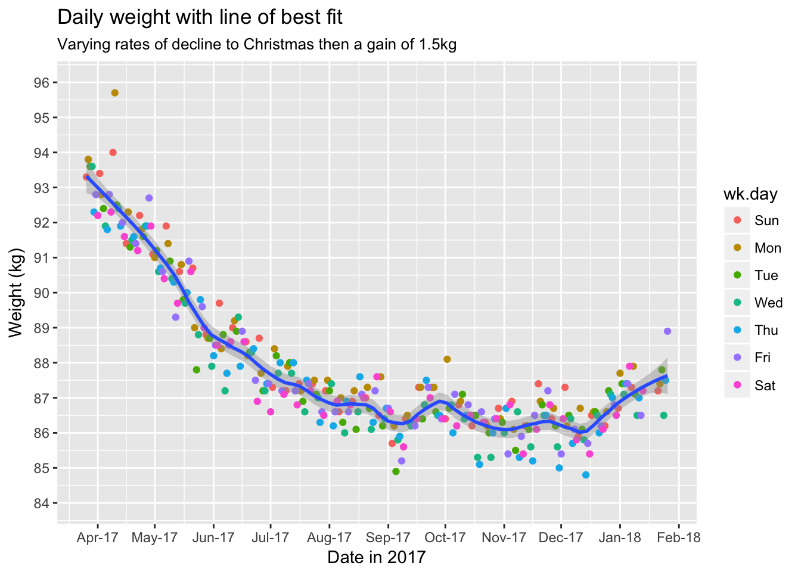
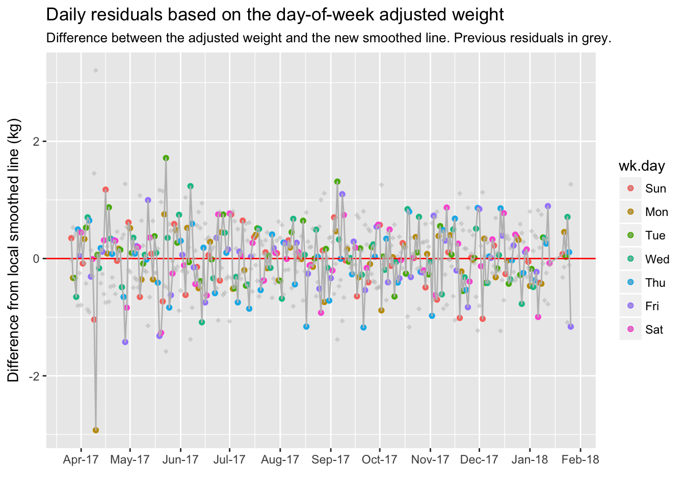
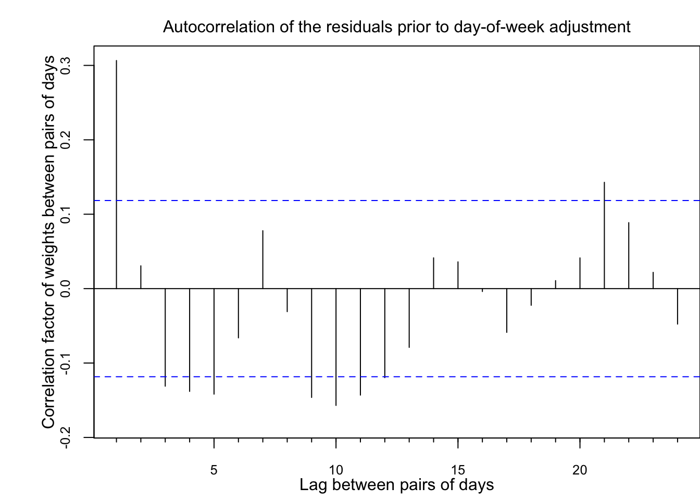

Introduction
Health and wellbeing is one of my 5 core values, and I extended our new beginning in 2017 to establish new habits to live these values. The new habits included:
- Cycling to work where possible;
- Cutting out “gratuitous” sugar, i.e. confectionary and cakes;
- Reducing the evening meal to virtually a snack, thus making it my smallest meal of the day.
- Following the 7 minute workout 3 days per week, though I’ve embellished the exercises and extended it to a 30 minute workout thrice weekly.
Weight loss was not my primary objective but I was curious to see the impact of these new habits. My philosophy is well summarised by this article about focussing on healthy habits.
This blog post uses data to tell the story of the effect on my weight of adopting these habits. As you will see, I lost a considerable amount of weight, which was satisfying, but the study also shows the surprising variablility in my daily weight-in.
To be honest, I’m a little averse to sharing this story in case it comes across as vain or insensitive to friends and others who struggle with their weight. I see myself as very fortunate to have found a framework that has allowed me to achieve this weight loss - adopting these habits was relatively easy for me. I’m really sharing this story as a very personal account of some simple data collection and analysis - as though I am a “human guinea pig”.
Measurement Methods
Measuing my weight was very simple:
- I weigh myself first thing each morning immediately after I get out of bed (well, actually the second thing…) and before I even drink water. For consistency, I weigh myself wearing my pyjamas, though I realised in winter that the additional t-shirt added 400g to my weight.
- We use a Weight Watchers branded bathroom scales with a digital display. As the recorded weight can vary from measure to measure, I tare the scales; weigh myself and repeat until I record the same weight twice in succession. On the majority of mornings, about 19 out of 20, I only need to tare twice.
- I simply record the weight with pencil on a sheet taped to the inside of the bathroom cabinet.
- The scales show 50g increments though I only recorded the 100g increment.
I adopted this routine from 26 March 2017, though I started the daily weigh-in from 13 Feburary and made a feeble attempt to record the readings in the Numbers app on my phone. This recording method was way too cumbersome and inconvenient - which shows that there is still room for old technology. For the record, my weight reading on 13 February was 94.7kg.
Some days have no reading, particularly when I’ve been away from home. This represents reality and, as a data scientist, I have left the days blank in some cases or imputed the reading by copying the previous day’s reading.
The Raw Data

This chart shows that weight loss was consistent and steady from April through to the start of August.
From August to December, weight loss has tapered off but there still appears to be a gradual decline in weight.
There is a definite dip in weight at the start of September, which coincides with a week when I battled a cold. My weight then picks up in the latter half of September, which coincides with 50th birthday celebrations. My weight does not really fall below the smoothed line again until mid-October. The slight increase in November may coincide with a temporary habit of consuming raw almonds by the handful at work; a habit I cut by the start of December.
My weight has clearly picked up from Christmas; like most people, I overate across the Christmas / New Year period and broke my normal exercise routines.
What also stands out is the variability of the recorded weights above and below the smoothed line (line of best fit). I suspect that this is due to a range of reasons:
- Physiological effects, such as level of hydration and food in my digestive system.
- Day of the week effect as I tended to eat more on weekend days than week days.
- Variability in the scales.
As a data scientist, I’m particularly interested in the residuals, i.e. the variation between the line of best fit and the actual reading.
For data scientists, I used the Loess approach to generating the line of best fit with span = 0.2. I experimented with a range of spans until I found a line that I judged as a good fit for the points. I considered using an exponential smoothing method but chose Loess on the assumption that the residuals were far greater than the true day-to-day movement, thus the short-term future readings were as valid to include in the smoothing function as the short-term recent readings.
The “line of best fit” should represent my normalised weight once the random affects are removed. It should represent my “true” weight. From a statistics point of view, I had the following train of thought:
- There should be a better way to determine the optimum span.
- I played around with optimising the span using k-folds analysis, but the optimum result was the minimum span which produced a very volatile “smoothed” line. i.e. the smoothed line looked like it was overfitting the data.
- I also played around smoothing splines, though it produced a smoothed line that was even more overfitting.
- Then I considered the pattern in the residuals, which led to a new theory; there is moderate auto-correlation in the residuals. This auto-correlation hinders methods to find an optimised smoothing lines that don’t “overfit” the data.
Analysis of the variations from the smoothed line
By adding the predictions and residuals to the data set, we can understand some of the variations better.
The spread of the points above and below the zero-line looks reasonable.
Statistically speaking, there is a chance that the frequency of the points above and below the line is not random. Later, I’ll discuss some interesting patterns in the sequence of residuals.
Variations from month-to-month using a “box plot”
This box plot shows the spread of the residuals within each month. Box plots are regularly used by data scientists to represent the spread of data points. The points and line below the box represent the bottom 25% of the residuals The bottom half of the box represents the next 25% of the residuals (the second quartile), and so on. The points above and below the box represent outliers. I’ve added a point in the middle of the box to represent the average of the residuals, which is usually close to the median but rarely exactly the same.
My key conclusion from this chart is that the residuals are evenly spread around zero, or close to zero, for every month, which supports this analysis.
Variations between days of the week
What if we look at the distribution of residuals based on the day of the week. We will split the dates into the period before 1 August, between 1 August and Christmas, and after Christmas, which is around where I observe “inflection” points.
The box plots show some interesting features.
For the Pre-August period:
- The median residual for sunday is around +0.25kg, whereas the median residual for Saturday is around -0.25kg.
- This is consistent with different eating patterns and activity levels on weekends compared to weekedays.
For the Aug-Xmas period:
- The highest residual is Monday, with a median of around +0.3kg.
- The lowest residual is Thursday with a median of around -0.2kg.
- Friday’s and Saturday’s median residual is close to zero.
Adjust for Day of the Week
What if we adjust for the day of the week effect? Statistically speaking, this is transforming the data to remove the effect of the day of the week (assuming my hypothesis that the day of the week does affect my weigh-in).
Day of the week adjustments| Day | Pre-Aug | Aug-Dec | Post Xmas |
|---|---|---|---|
| Sun | +0.34 | +0.09 | -0.16 |
| Mon | +0.21 | +0.37 | +0.39 |
| Tue | +0.05 | -0.08 | +0.35 |
| Wed | -0.22 | -0.16 | -0.29 |
| Thu | -0.33 | -0.38 | +0.09 |
| Fri | -0.23 | +0.03 | +0.20 |
| Sat | -0.38 | +0.07 | -0.11 |
This table represents the assumed “day-of-the-week” effect to subtract from my raw readings.
With these adjustments, how does my weight projectory now look?
Not surprisingly, the line of best fit looks similar with a similar spread of points above and below the line.
Now, let’s see how the residuals look. They certainly appear as though they are closer to zero.

What is the average spread
One final piece of analysis: how much does the day-to-day weigh-in vary from the “true” weight, both before and after the day-of-the-week adjustment?
Without day-of-week adjustmentResidual scores
| period | Average day-to-day variation | Standard Deviation | Correlation between predicted and actual |
|---|---|---|---|
| Pre-Aug | 0.58 | 0.64 | 0.95 |
| Aug-Dec | 0.49 | 0.52 | 0.52 |
| Post Xmas | 0.47 | 0.53 | 0.35 |
Residual scores
| period | Average day-to-day variation | Standard Deviation | Correlation between predicted and actual |
|---|---|---|---|
| Pre-Aug | 0.56 | 0.59 | 0.96 |
| Aug-Dec | 0.47 | 0.48 | 0.62 |
| Post Xmas | 0.50 | 0.49 | 0.51 |
We can see that there is a marginal improvement in the residuals as a result of this transformation.
Summary
This analysis set out to visualise my daily recorded weights, particularly as I finally succeeded in adopting habits that represent my “Health and Wellbeing” habits.
What surprised me was the day-to-day variation in my recorded weights. The explanations for the variation include:
- Levels of hydration. This is particularly evident in the week/commencing 4 September, when I battled a cold, lost fluids and cosequently lost about 700g from 2 weeks earlier.
- Other physiological reasons, such as the food in my digestive system.
- Day-of-the-week variations, driven by different habits on different days of the week, such as how much I exercise and how much I eat and drink I consume. This contrasts particuarly on working days and weekends.
- Random, day-to-day effects, which I attribute to variations in the scales.
There are many opinions that people should only weigh themselves weekly or fortnightly as the day-to-day variation can by distracting and demoralising. My opinion is that people should find what works for them. What works for me is a daily weigh-in with an understanding that there is a random aspect to the reading that I should factor in. If I weighed myself only weekly, I may strike a day with a positive random reading, which could dishearten after a week of effort and discipline.
A quick review of “weight loss tracker” apps in Apple’s App Store found that only 2 of the top apps show weights graphically, and neither of these graphs depicted anywhere near the day-to-day variation I experienced. One actually had a very smooth decline. App developers could add a feature that estimates the user’s true weight after adjusting for day-to-day variations.
For the technically minded
Optimising the Smoothing Span
This analysis assumed that the ideal Loess span setting for smoothing was 0.2, which was through pure judgement.
I grappled with how to find an optimised setting for span.
My first attempt was to use k-folds analysis to test a range of span settings. Interestingly, the “optimum” value was 0.06, which was also the minimum span that the algorithm would accept. I optimised the span setting based on minimising the RMS.
# Adapted from https://stats.stackexchange.com/questions/2002/how-do-i-decide-what-span-to-use-in-loess-regression-in-r
# on 29 Jan 2018
wts.model <- wts.pred %>%
filter(date < ymd("2017/12/25"))
span.seq <- seq(from = 0.06, to = 0.95, by = 0.05) #explores range of spans
k <- 10 #number of folds
set.seed(1) # replicate results
folds <- sample(x = 1:k, size = nrow(wts.model), replace = TRUE)
cv.error.mtrx <- matrix(rep(x = NA, times = k * length(span.seq)),
nrow = length(span.seq), ncol = k)
for(i in 1:length(span.seq)) {
for(j in 1:k) {
loess.fit <- loess(wt ~ date.nm, data = wts.model[folds != j, ], span = span.seq[i])
preds <- predict(object = loess.fit, newdata = wts.model[folds == j, ])
cv.error.mtrx[i, j] <- mean((wts.model$wt[folds == j] - preds)^2, na.rm = TRUE)
}
}
cv.errors <- rowMeans(cv.error.mtrx)
# cv.errors
best.span.i <- which.min(cv.errors)
best.span <- span.seq[best.span.i]
wts.model %>%
ggplot(aes(x = date, y = wt)) +
geom_point(size = 0.5) + # aes(colour = wk.day)) +
geom_smooth(span = 0.2, method = "loess", aes(colour = "blue")) +
geom_smooth(span = best.span, method = "loess", aes(colour = "red"), se = FALSE) +
labs(title = "Daily weight with alternate lines of best fit",
subtitle = "Red line is \"optimised\" but appears to overfit",
x = "",
y = "Weight (kg)") +
scale_x_date(date_breaks = "1 month",
date_labels = "%b-%y") +
scale_y_continuous(breaks = c(84:96)) +
coord_cartesian(ylim = c(84, 96)) +
scale_colour_manual("Smoothing span",
values = c(blue = "blue", red = "red"),
labels = c("0.2", as.character(best.span)))The “optimised” span setting appears to overfit the points. The day of the week effect seems particularly evident in the pre-August period, which counters the point of finding a line of best fit.
Autoregression in the Residuals
The autogregression of the residuals gives a clue as to why the k-folds method failed to find a satisfactory optimised span. The correlation factor for lag 1 is around 0.34, indicating a mild correlation between successive readings. Hence, the optimisation algorithm will fail to correct when a single reading is missing.
Interestingly, the correlation with lag 7 is completetely insignificant, which challenges the validity of my day-of-the-week adjustment. I confess that I cannot explain this or suggest a better alternative.
par( mar=c(3.1, 4.7, 2.3, 0),
cex.lab = 0.8,
cex.axis = 0.8)
wts.pred %>%
filter(date <= ymd("2017/12/24")) %>%
arrange(date) %>%
select(resid) %>%
as.ts() %>%
Acf(main = "",
xlab = "",
ylab = "",
cex.lab = 0.8,
cex.axis = 0.8)
mtext(side=1, text="Lag between pairs of days", line=1.8)
mtext(side=2, text="Correlation factor of weights between pairs of days", line=1.8)
mtext(side=3, text="Autocorrelation of the residuals prior to day-of-week adjustment", line=0.5)